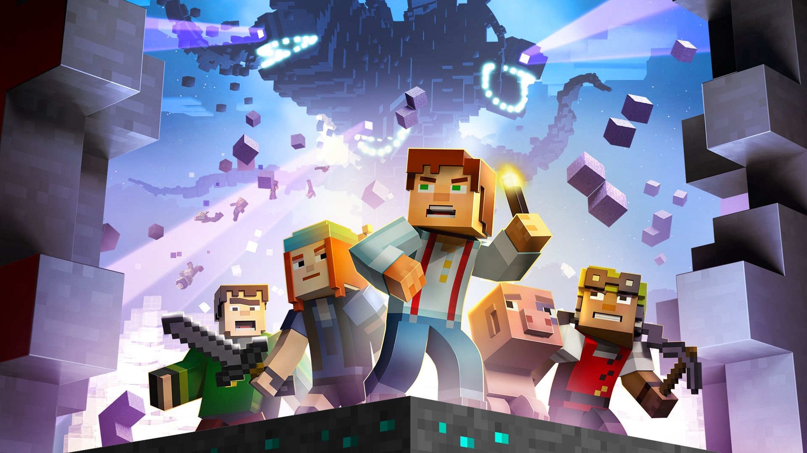

strona V.I.P
Minecraft: Story Mode – komputerowa gra przygodowa typu „wskaż i kliknij”, podzielona na 8 odcinków, stworzona przez studio Telltale Games, przy współpracy z Mojang AB – twórcami oryginalnego Minecrafta. Pierwszy odcinek wydany został w październiku 2015 na komputery z systemem Windows i macOS, konsole PlayStation Vita, PlayStation 3, PlayStation 4, Xbox 360, Xbox One i Wii U oraz telefony z iOS i Androidem. 22 sierpnia 2017 wydano kompletną edycję na konsolę Nintendo Switch[1]. Fabuła gry skupia się na odnalezieniu Zakonu Kamienia i uratowaniu świata przed Wither Storm.